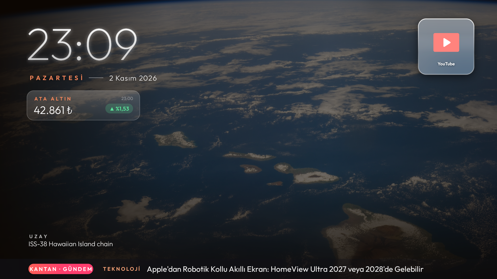

Around the grid
Use the directional pad to move continuously between nine glass tiles.
 Creacet SoftwareAll projects
Creacet SoftwareAll projectsXiaomi TV Box S · 2nd generation
Move through a looping grid with your remote. Pick an app, put on a podcast or let a space photograph fill the screen.

Use the directional pad to move continuously between nine glass tiles.
Return to your last listening position and dim the display while it plays.
Schedule a sleep timer or let the screen darken gradually after sunset.